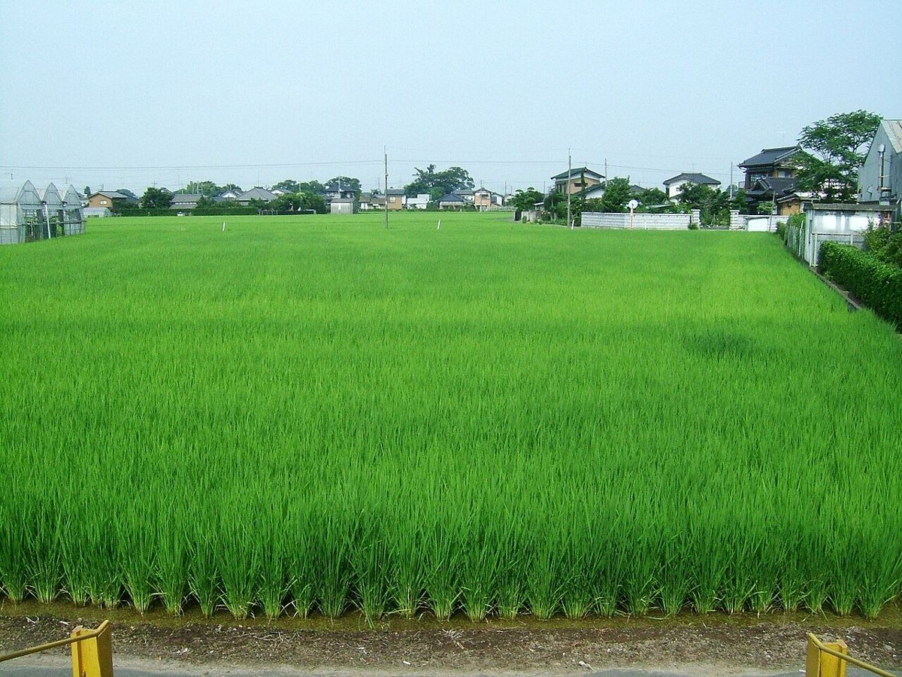
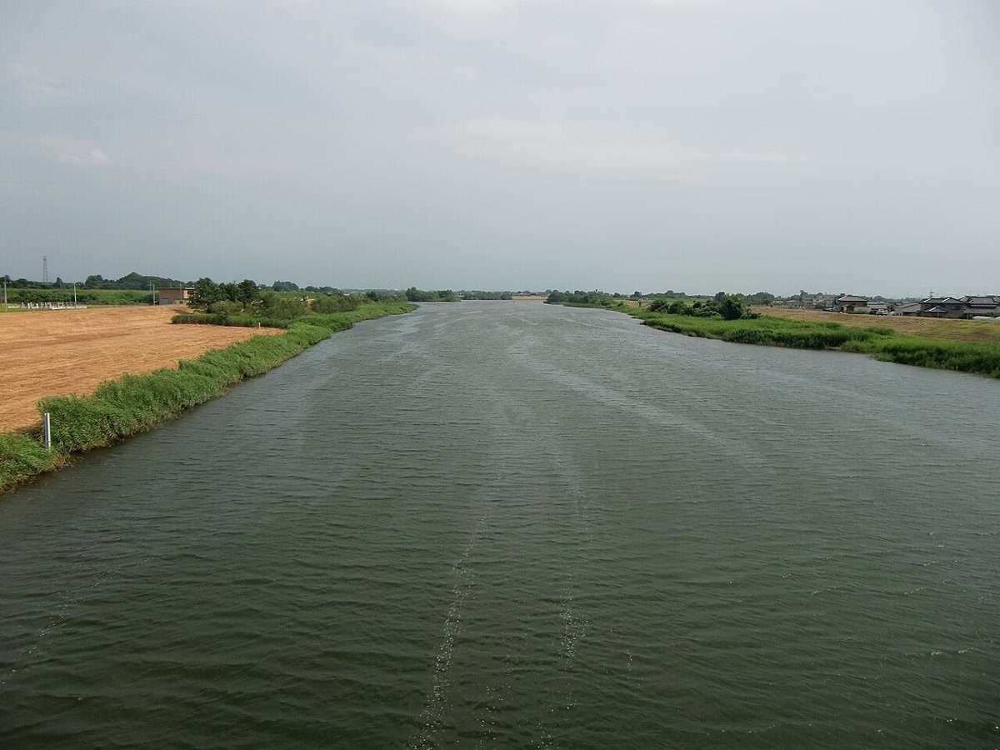

お店について
お店の情報
| 店名 | カフェ杢いち |
|---|---|
| 所在地 | 茨城県常総市小保川1427-3 |
| 電話 | 0297-21-3233 |
| @cafe_mokuichi | |
| 営業時間 | 準備中(お問い合わせください) |
| 定休日 | 準備中(お問い合わせください) |
| 席数 | 準備中(お問い合わせください) |
| 駐車場 | 準備中(お問い合わせください) |
この試作ページのデザインについて
このページの見せ方は、制作側の案(デザイン上のイメージ)です。店名の「杢」の字から、木の切り口に現れる模様を連想し、背景や区切り線の飾りに借りています。
「ひと息の、ものさし。」というコピーも、制作側が考えた仮の言葉です。店名の由来や、お店の理念を示すものではありません。
店名の由来やお店の考え方は、確認できていません。ご存じの方からお聞きできれば、内容を差し替えます。

写真のイメージ 1
掲載しているのはフリー素材の写真です。ページの雰囲気をつかんでいただくためのイメージで、お店の様子や周辺を写したものではありません。

写真のイメージ 2
こちらもフリー素材のイメージ写真です。実際の店舗とは関係がなく、撮影地も異なる場合があります。
スタッフ・こだわり・歴史
準備中(お問い合わせください)